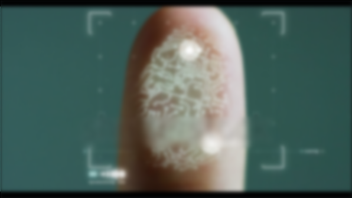
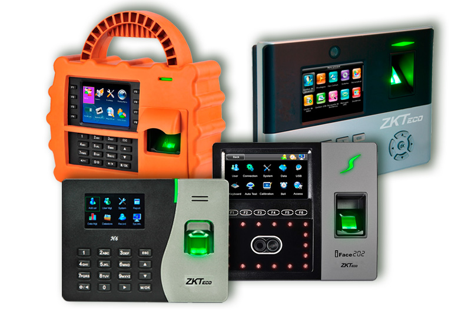
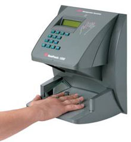

Los dispositivos biométricos son usados en sistemas computarizados de alta gama, principalmente para identificar atributos físicos. Están diseñados para máximos estándares de seguridad y múltiples aplicaciones.

Huella, rostro o tarjeta en el lector de la puerta o de la planta. Toma menos de un segundo y no hay nada que firmar.
Las marcaciones viajan solas del dispositivo al sistema — nadie tiene que descargar archivos ni pasar datos a mano.
Horas trabajadas, atrasos, horas extra y permisos pasan directo al cálculo de nómina del mes.

Una gran cantidad de modelos para control de acceso y asistencia, incluso multibiométricos que combinan varias tecnologías al mismo tiempo para máxima flexibilidad.
Ideal para oficinas, locales comerciales y accesos por zonas.
Ver modelos →
Dispositivo de geometría de mano de Recognition Systems, robusto y confiable, pensado para ambientes exigentes donde la huella no siempre lee bien.
Ideal para plantas industriales y personal que trabaja con las manos sucias.
Ver equipo →¿No sabes cuál conviene para tu operación? Te ayudamos a elegir según el ambiente y la cantidad de personal.
Consultar con un asesor